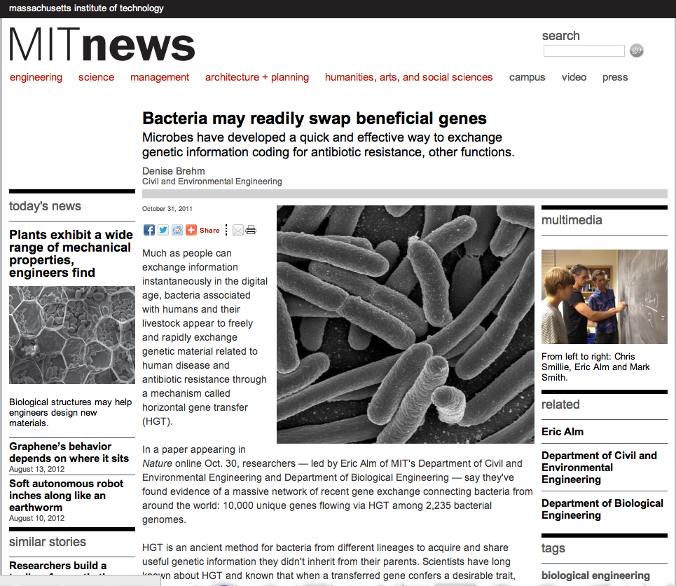

Bacteria may readily swap beneficial genes
Original source:
MIT News
October 31, 2011
By Denise Brehm
Much as people can exchange information instantaneously in the digital age,
bacteria associated with humans and their livestock appear to freely and rapidly
exchange genetic material related to human disease and antibiotic resistance
through a mechanism called horizontal gene transfer (HGT).
In a paper appearing in Nature online Oct. 30, researchers - led by Eric Alm of
MIT's Department of Civil and Environmental Engineering and Department of
Biological Engineering - say they've found evidence of a massive network of
recent gene exchange connecting bacteria from around the world: 10,000 unique
genes flowing via HGT among 2,235 bacterial genomes.

HGT is an ancient method for bacteria from different lineages to acquire and
share useful genetic information they didn't inherit from their parents.
Scientists have long known about HGT and known that when a transferred gene
confers a desirable trait, such as antibiotic resistance or pathogenicity, that
gene may undergo positive selection and be passed on to a bacterium's own
progeny, sometimes to the detriment of humans. (For example, the proliferation
of antibiotic-resistant strains of bacteria is a very real threat, as seen in
the rise of so-called "superbugs.")
But until now, scientists didn't know just how much of this information was
being exchanged, or how rapidly. The MIT team's work illustrates the vast scale
and rapid speed with which genes can proliferate across bacterial lineages.
"We are finding [completely] identical genes in bacteria that are as divergent
from each other as a human is to a yeast," says Alm, the Karl Van Tassel
Associate Professor. "This shows that the transfer is recent; the gene hasn't
had time to mutate."
"We were surprised to find that 60 percent of transfers among human-associated
bacteria include a gene for antibiotic resistance," adds computational systems
biology graduate student Chris Smillie, one of the lead authors of the paper.
These resistance genes might be linked to the use of antibiotics in industrial
agriculture: The researchers found 42 antibiotic-resistance genes that were
shared between livestock-associated and human-associated bacteria, demonstrating
a crucial link connecting pools of drug resistance in human and agricultural
populations.
"Somehow, even though a billion years of genome evolution separate a bacterium
living on a cow and a bacterium living on a human, both are accessing the same
gene library," Alm says. "It's powerful circumstantial evidence that genes are
being transferred between food animals and humans."
Moreover, the team identified 43 independent cases of antibiotic-resistance
genes crossing between nations. "This is a real international problem," says
microbiology graduate student Mark Smith, another lead author of the study.
"Once a trait enters the human-associated gene pool, it spreads quickly without
regard for national borders."
The practice of adding prophylactic antibiotics to animal feed to promote growth
and prevent the spread of disease in densely housed herds and flocks is
widespread in the United States, but has been banned in many European countries.
According to the Federal Drug Administration, more than 80 percent of the 33
million pounds of antibiotics sold in the United States in 2009 was for
agricultural use, and 90 percent of that was administered subtherapeutically
through food and water. This includes antibiotics such as penicillins and
tetracyclines commonly used to treat human illness.
The MIT researchers found that HGT occurs more frequently among bacteria that
occupy the same body site, share the same oxygen tolerance or have the same
pathogenicity, leading them to conclude that ecology - or environmental niche -
is more important than either lineage or geographical proximity in determining
if a transferred gene will be incorporated into a bacterium's DNA and passed on
to its descendants.
"This gives us a rulebook for understanding the forces that govern gene
exchange," Alm says.
The team applied these rules to find genes associated with the ability to cause
meningitis and other diseases, with the hope that transferred traits and the
genes encoding those traits might make especially promising targets for future
drug therapies.
"This is a very interesting piece of work that really shows how the increasing
databases of complete genome sequences, together with detailed environmental
information, can be used to discover large-scale evolutionary patterns," says
Rob Knight, associate professor of chemistry and biochemistry at the University
of Colorado at Boulder, who says he agrees with the authors' findings. "The
availability of vast datasets with excellent environmental characterization will
give us an unprecedented view of microbes across the planet."
Continuing the work, the researchers are now comparing rates of exchange among
bacteria living in separate sites on the same person and among bacteria living
on or in people with the same disease. They're also studying an environmentally
contaminated site to see which swapped genes might facilitate microbial cleanup
by metal-reducing bacteria.
Other co-authors of the Nature paper are graduate student Jonathan Friedman,
postdoc Otto Cordero and former graduate student Lawrence David, now at Harvard
University.
The work is part of the National Institutes of Health's Human Microbiome
Project. It was funded by the Department of Energy's ENIGMA Scientific Focus
Area and the National Science Foundation.